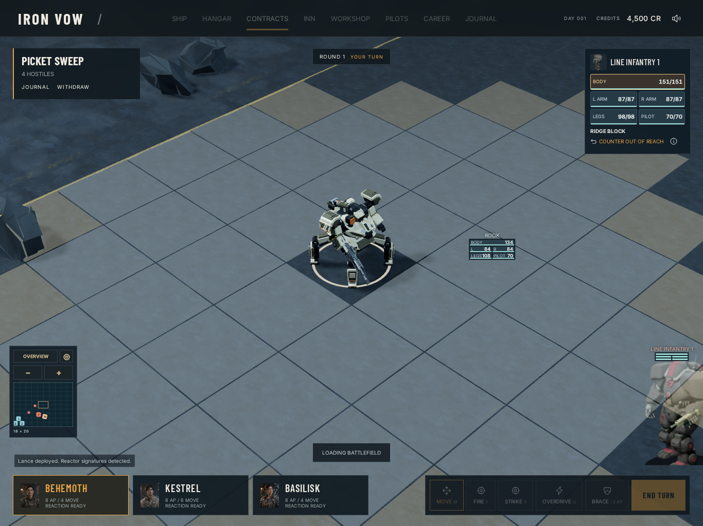
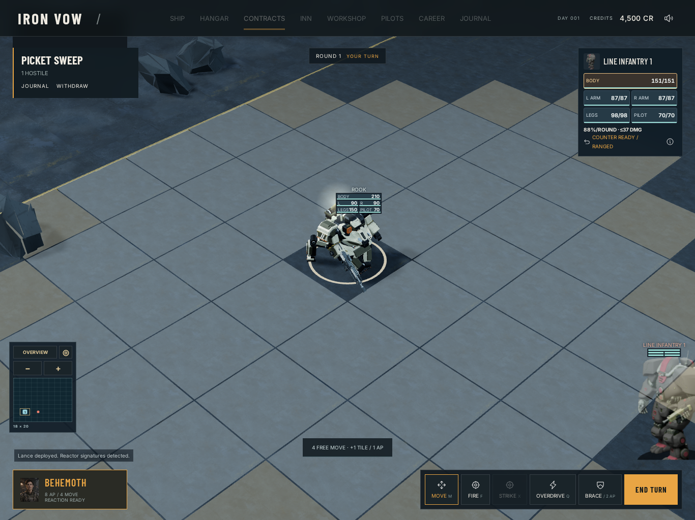
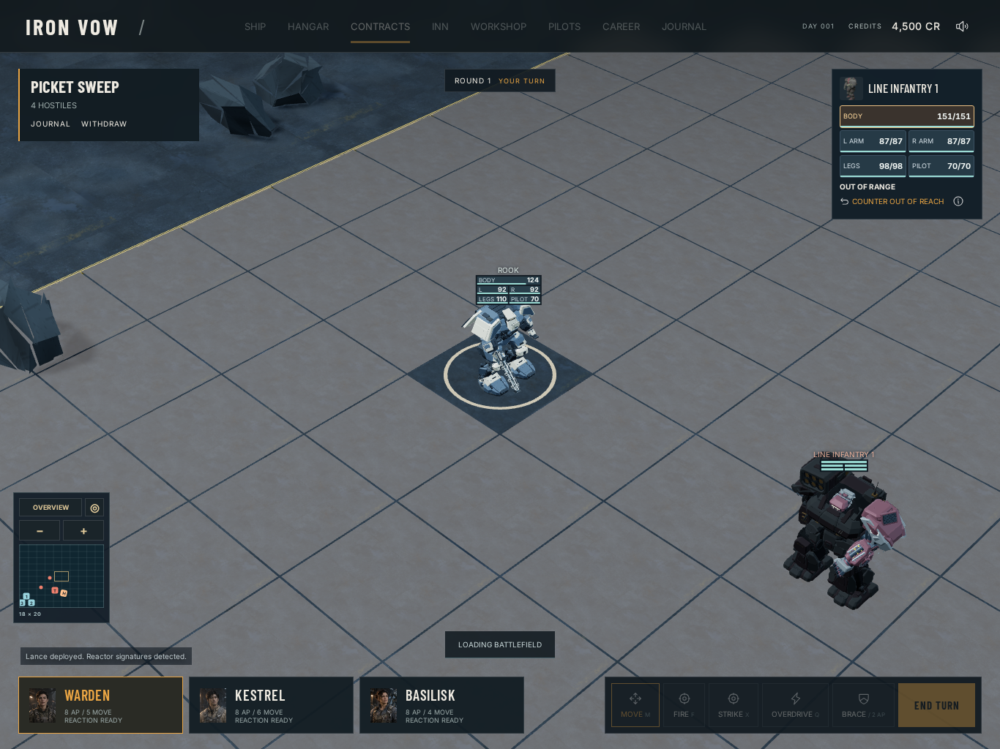

Phase 2 actual combat Actual __ironVow.attack commands and rules; deterministic 30 Hz. Only unrecorded main-canvas GPU draws omitted, with scene/camera matrix updates; render-target draws and readbacks remain native so cached art is populated. Each saved frame restores native GPU render/readback at deviceScaleFactor=1 with QA-only preserveDrawingBuffer. Software WebGL correctness evidence; no native iPad performance claim.
Source f68b5dff18072d19907e14b3cdf2556f5d99c602
rifle 1366×1024 no-preference source 6786df4 ready launch @ 0.967s impact @ 1.067s recovery shotgun 1366×1024 no-preference source 6786df4 ready launch @ 1.033s impact @ 1.133s recovery missile 1366×1024 no-preference source 6786df4 ready launch @ 1.100s impact @ 1.500s arrival @ 1.500s recovery rail 1366×1024 no-preference source f68b5df hailstorm 1366×1024 no-preference source f68b5df rampart 1366×1024 no-preference source f68b5df breaker 1366×1024 no-preference source f68b5df cleaver 1366×1024 no-preference source f68b5df piledriver 1366×1024 no-preference source f68b5df blade 1366×1024 no-preference source f68b5df sidewinder 1366×1024 no-preference source f68b5df trident 1366×1024 no-preference source f68b5df forge 1366×1024 no-preference source f68b5df ember 1366×1024 no-preference source f68b5df watchman 1366×1024 no-preference source f68b5df falcon 1366×1024 no-preference source f68b5df cerberus 1366×1024 no-preference source f68b5df obelisk 1366×1024 no-preference source f68b5df rivet 1366×1024 no-preference source f68b5df parallax 1366×1024 no-preference source f68b5df hatchet 1366×1024 no-preference source f68b5df pike 1366×1024 no-preference source f68b5df tonfa 1366×1024 no-preference source f68b5df anchor-hammer 1366×1024 no-preference source f68b5df morrow 1366×1024 no-preference source f68b5df locust 1366×1024 no-preference source f68b5df breach-gauntlet 1366×1024 no-preference source f68b5df pulse-bash 1366×1024 no-preference source f68b5df aegis-cleave 1366×1024 no-preference source f68b5df aegis-bash 1366×1024 no-preference source f68b5df needle-carbine 1366×1024 no-preference source f68b5df flechette-scattergun 1366×1024 no-preference source f68b5df signal-knife 1366×1024 no-preference source f68b5df vesper-shoulder 1366×1024 no-preference source f68b5df jumpjet 1366×1024 no-preference source f68b5df mortar-future-presentation 1366×1024 no-preference source f68b5df 
ready presentation @ 0.200s presentation @ 0.400s presentation @ 0.600s 
presentation @ 0.967s presentation @ 1.367s shield-interception 1366×1024 no-preference source f68b5df critical-fault 1366×1024 no-preference source f68b5df 
ready launch @ 1.167s impact @ 1.233s post-contact @ 4.033s recovery right-destruction 1366×1024 no-preference source f68b5df ready launch @ 0.967s impact @ 1.067s post-contact @ 4.000s recovery body-death 1366×1024 no-preference source f68b5df ready launch @ 0.967s impact @ 1.067s post-contact @ 4.800s post-contact @ 7.800s post-contact @ 15.600s post-contact @ 16.000s recovery pilot-kneel 1366×1024 no-preference source f68b5df ready launch @ 0.933s impact @ 1.033s post-contact @ 6.300s recovery missile 1366×1024 reduce source f68b5df ready launch @ 0.100s arrival @ 0.500s impact @ 0.533s recovery rail 1366×1024 reduce source f68b5df ready launch @ 0.067s impact @ 0.133s recovery blade 1366×1024 reduce source f68b5df ready impact @ 0.167s recovery rifle 1194×834 no-preference source f68b5df ready launch @ 0.967s impact @ 1.067s recovery shotgun 1194×834 no-preference source f68b5df ready launch @ 1.033s impact @ 1.133s recovery missile 1194×834 no-preference source f68b5df ready launch @ 1.100s impact @ 1.500s arrival @ 1.500s recovery rail 1194×834 no-preference source f68b5df ready launch @ 1.133s impact @ 1.200s recovery blade 1194×834 no-preference source f68b5df ready impact @ 1.200s recovery